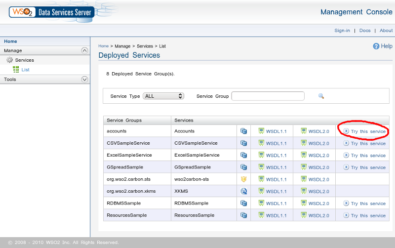
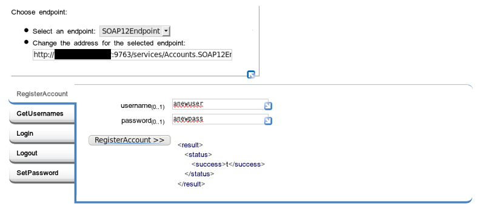
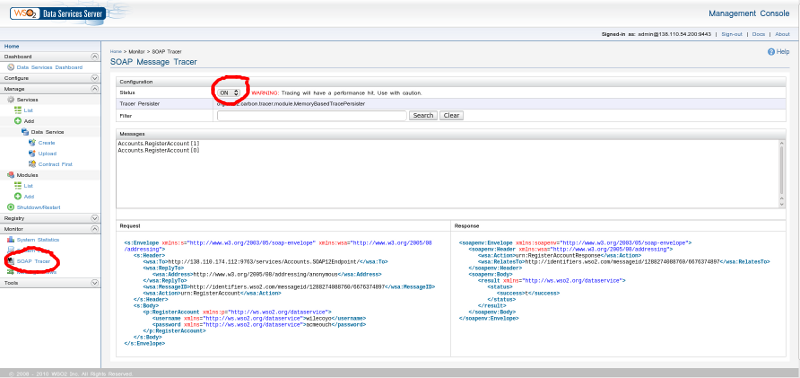

SQL as a Service
By Ron Peterson
SQL as a Service
- Table of Contents
- Introduction
- Building a PostgreSQL Application
- Translating Database Procedures into a Web Service
- Consuming a Web Service with XForms
- Conclusion
- References
- Appendices
Introduction
Many (not all) modern relational databases allow you to program directly in the database itself. PostgreSQL is a star in this regard, as it allows you to write database procedures in Perl, Python, Tcl, Java, Guile, pgSQL, and more. You can write entire applications in this fashion, and doing so simplifies or eliminates much of the tedium of solving tricky concurrency and reliable transaction problems that databases solve as a matter of course.
So how do you interact with such an application? Well, the nice thing is, it doesn’t really matter. You can come at a database application from many directions, all at once, and the database will iron out all of the race conditions and other such nuisances for you. So you might write some simple shell scripts to do some batch processing, another client interface via JDBC, and bang at it with Perl via the Pg module. When the database encapsulates all of the program logic, all of these interfaces are just veneer, and can happily coexist with little additional effort, and no adverse consequences whatsoever.
One particular application interface I’ve been interested in lately is XForms. The W3C created the XForms standard to address many of the shortcomings inherent in designing application interfaces using current web standards. You can use XForms today, the standard continues to be improved, and XForms will be incorporated as a native component of the next version of XHTML. This is a good time to get a head start on a technology of growing importance. And amen to anything that promises to simplify web application design and development.
Putting all this together: if we can find a way to glue XForms to a database application, we may be able to create a web application almost entirely declaratively. Maybe it’s just the way my mind works, or maybe I’m just a relational database nerd, but I find this approach appealing. The trick here is to translate SQL stored procedures into a language that XForms understands: web services. There’s more than one way to cook this meal, but my favorite magic sauce is the WSO2 Data Services Server, one of many amazing products produced by the good folks at WSO2. While my goal in this article is to use web services to hook up with XForms, looking at the entire WSO2 product portfolio may give you many other reasons to be interested in the the world of web services, even if XForms itself doesn’t really float your boat.
So the WSO2 Data Services Server will allow us to easily transform a SQL stored procedure into a web service. Web services are XForms’ native language. There’s one remaining problem: how do we render an XForm? Browsers themselves don’t generally understand XForms (yet). There are a couple of plug-ins available for various browsers, but in my experience, none of them are very mature. So what do we do? We’ll use a server side application called Orbeon Forms to translate our XForms application into an AJAX web app that can be run in pretty much any standard browser. Someday, we can hope browsers will speak native XForms, but until then we can fake it.
That’s a lot of ground to cover. Unfortunately, I don’t have room for a detailed exposition on all of the particulars; instead I’m hoping to pique your interest in a particular design methodology. This is not an in-depth article about PostgreSQL, or Web Services, or XForms (each deserve books in their own right), but rather a cursory explanation of how they can work together. I don’t want to leave you completely stranded, however, so I’ve attempted to collect enough reference material to help you find your way. I’ve also written a couple of short appendices to help you get the basic infrastructure up and running, in case you’d like to play along. After all, it’s a lot more fun to actually run an example than to simply read about it.
Building a PostgreSQL Application
Speaking of examples, what should our example application be? Once you have put a few systems online, you realize that almost everything begins with account management; so I thought that might be a fun place to start here also. Our little app will allow us to register a new username and password; to log in; to change our password; and to log out. If you log in as the special administrative user we define, you can also change other people’s passwords. Of course, a real account management application would include many more operations than that, but this should suffice for our current purpose.
We can describe these operations as the following functions:
RegisterAccount( username, password ) returns success as boolean true/false Login( username, password ) returns session id and admin status (t/f) on success, null on failure Logout( sessionId ) returns success as boolean true/false SetPassword( username, password, sessionId ) returns success as boolean true/false
If you’d like to install and run this example database application, download the database setup files to your database server. All of the database DDL statements are in the ddl.sql file, which you might want to refer to while reading the following discussion.
I created the aforementioned functions in PostgreSQL’s PL/pgSQL procedural language. We want to distinguish the procedures that comprise our public interface from the tables and internal functions that should remain inaccessible. We’ll do this using two schemas: one is called 'private', and the other is called 'interface'. The create.sh script sets the permissions on the 'private' schema such that the tables and functions it contains are only accessible by the database owner. The permissions on our 'interface' schema are set to allow the user we call 'jq_public' to access them. The interface functions themselves must be able to access our private data, of course. The 'SECURITY DEFINER' qualification in our interface function definitions configures those functions to run with the permissions of the user that defined the function, i.e. the database owner. This is similar in principle to the setuid bit in Unix. So our unprivileged 'jq_public' user can run the functions, because they are in the 'interface' schema to which he has permission. The functions can access the private data they need because they run with permissions available to the database owner 'accadmin' we use to create the database.
The PostgreSQL Setup appendix explains how to install the provided sample account management database. If you’d like to follow along with your own working example, this would be a good time to install the database portion of our account management application.
We can use the 'psql' command to connect to our new database as user jq_public:
psql -U jq_public -d accounts -h localhost
Use the password you specified when creating the database. We didn’t put any database objects in the 'public' schema, so once connected, you need to set your search path before you can do anything. You can check that your permissions are properly limited by trying to access objects in the 'private' schema, and then the 'interface' schema.
accounts=> set search_path to private;
SET
accounts=> \dt
No relations found.
accounts=> \df
List of functions
Schema | Name | Result data type | Argument data types | Type
--------+------+------------------+---------------------+------
(0 rows)
accounts=> set search_path to interface;
SET
accounts=> \dt
No relations found.
accounts=> \df
List of functions
Schema | Name | Result data type | Argument data types | Type
-----------+---------------+-------------------------+----------------------------------------+--------
interface | get_usernames | SETOF character varying | sessionid text | normal
interface | login | private.login_info | un text, pw text | normal
interface | logout | boolean | sessionid character varying | normal
interface | register | boolean | un text, password text | normal
interface | set_password | boolean | un text, password text, sessionid text | normal
Although there are certainly tables and functions in the private schema, those objects should be invisible to the jq_public role. If you perform the same operations as the database owner, you can see everything. Try running some of the interface functions. If you like, log in to the accounts database as the database owner or PostgreSQL admin and then query the underlying tables to see how they are affected.
accounts=> select register( 'auser', 'apassword' );
register
----------
t
(1 row)
accounts=> select * from login( 'auser', 'apassword' );
session_id | is_admin
--------------------------------------+----------
250e3bc9-d09c-93d3-f0fa-3f031fc16e19 | f
(1 row)
accounts=> select logout( '250e3bc9-d09c-93d3-f0fa-3f031fc16e19' );
INFO: logout: session 250e3bc9-d09c-93d3-f0fa-3f031fc16e19 terminated
logout
--------
t
(1 row)
Translating Database Procedures into a Web Service
We could very easily wrap these functions up in a small set of shell scripts and we’d have a fully functional (though rather anemic) account management application. Let’s do something a little more interesting now, though, and turn these procedures into a web service.
There’s more than one way to create a web service, but if you are starting with a database, the simplest way I’ve run across (so easy it’s almost embarrassing) is to use WSO2’s Data Services Server (let’s call it DSS for short.) The WSO2 folks make some of the nicest software to use I’ve run into in some time. Using the DSS, we can transform our PostgreSQL procedures into a web service with no coding whatsoever; we only need to do a little configuration. You can use the web admin interface to accomplish this; but I find that editing the configuration files directly is just as easy, and also a little easier to understand. Download the configuration file I’ve included, and open it in your favorite editor.
The configuration file begins by describing the JDBC connection parameters the Data Services Server needs to connect to our database. We’ll connect as the 'jq_public' role we created with our setup script. You’ll need to edit the configuration and modify the connection parameters to use the password you previously defined for this user. Because, as we saw earlier, this user has no permission to any database objects beyond our interface functions, neither will our web service.
The rest of the configuration file describes how to map input values to our stored procedures’ input parameters, and how to map our procedures’ output values to XML element values. Our application is rather simple, so our XML output is also quite simple, as you can see in Figure 2, below. I don’t want to wander too far off track, so I’ll refer you to the fine documentation for a complete description of how this file works (you can probably figure my simple example out yourself, when you see the output). The Data Services Server’s samples/dbs directory also includes a number of illustrative examples of what you can do.
Deploy this service by putting your updated accounts.dbs file into the WSO2 Data Services Server’s repository/deployment/server/dataservices directory, alongside the other sample .dbs files you will find there. You can also upload a new service description using the web based administrative interface instead, if you prefer.
Assuming the DSS is running, it will hot-deploy (and update on edit) the web service we described; so now, if you click on the services 'List' link on the left side of the DSS web interface, you should see a new service called 'Accounts' in the service list.

Figure 1. Service list

Figure 2. Try it
Once you have that all working, log into your DSS as your DSS admin user. In the accordion menu on the left, open the 'Monitor' section. There you will find a link to the 'SOAP Tracer' tool. This is a very handy way to see the XML messages being passed back and forth when you use your web service. You’ll need to know what these messages look like for our next step, which is to connect our web service to XForms. The XForms instance data we submit and consume must match the form of the XML messages you can see here. Go ahead and turn the tracer on.
Go back to the 'Try this service' page and do something so that we can see what the input and output messages look like. If you like, just for grins, instead of using the web form interface, you might also try calling the service with a parametrized URL. Expand the top left of the web form, where it says 'Choose endpoint'. Copy the URL, and paste it into the location tab of your browser (use a new tab so you can flip back and forth). Append the function name and the input parameters to the URL just like you’d append parameters to any old URL. The RegisterAccount function might look like so, for example:
Endpoint URL: http://127.0.0.1:9763/services/Accounts.SOAP12Endpoint/
Service Name: RegisterAccount
parameter name: username
parameter name: password
becomes:
http://127.0.0.1:9763/services/Accounts.SOAP12Endpoint/RegisterAccount?username=newuser&password=newpassword
Paste this URL into your browser’s location bar and hit enter. Flip back to the SOAP tracer view in the DSS administrative interface, and you should see the SOAP messages that were passed back and forth.

Figure 3. SOAP Tracer
At this point you have successfully converted a database application written as a collection of rules and stored procedures into a web service. The approach we’ve takeen is essentially the inverse of the usual database-agnostic but language specific application paradigm. Instead, we’ve made a specific decision about our database and we’ve used it to encapsulate all significant program logic, thereby allowing us to be almost completely agnostic about the interface.
Consuming a Web Service with XForms
To wrap this up, we’ll go one step further, and briefly discuss one possible way to build a web UI on top of our web service, namely using XForms. Take a look at the SOAP messages we generated earlier (do a page refresh of the SOAP tracer view to see recent traffic). The messages generated by the RegisterAccount service should look as follows, for example:
<soapenv:Envelope xmlns:soapenv="http://www.w3.org/2003/05/soap-envelope">
<soapenv:Body>
<p:RegisterAccount xmlns:p="http://ws.wso2.org/dataservice">
<username xmlns="http://ws.wso2.org/dataservice">wilecoyo</username>
<password xmlns="http://ws.wso2.org/dataservice">eatbirds</password>
</p:RegisterAccount>
</soapenv:Body>
</soapenv:Envelope>
<soapenv:Envelope xmlns:soapenv="http://www.w3.org/2003/05/soap-envelope">
<soapenv:Header />
<soapenv:Body>
<result xmlns="http://ws.wso2.org/dataservice">
<status>
<success>t</success>
</status>
</result>
</soapenv:Body>
</soapenv:Envelope>
We use the structure of the XML messages sent to and from our web service to construct analogous instance data within our XForms model. For example, the view.xhtml file we'll see shortly contains some instance data that looks like this:
<xforms:instance id="register-submit">
<soap:Envelope>
<soap:Header />
<soap:Body>
<ds:RegisterAccount>
<ds:username>Enter Username</ds:username>
<ds:password>Enter Password</ds:password>
</ds:RegisterAccount>
</soap:Body>
</soap:Envelope>
</xforms:instance>
Notice that the form of this instance data exactly resembles what we observed in the DSS SOAP tracer. The namespace prefixes are different, and they are defined elsewhere, but the XML structure is identical.
As mentioned previously, we cannot run XForms directly in our browser (yet). Until we can, we’ll have to use a server side engine to deploy the XForms documents we create as an AJAX application that we can run in any modern browser. I’m going to use Orbeon, but other solutions, such as Chiba, are also able to do this.
If you’ve deployed Orbeon as a war file into Tomcat, you’ll find the application under Tomcat’s webapps folder, i.e. at ${CATALINA_HOME}/webapps/orbeon. From here, if you navigate to WEB-INF/resources/apps, you’ll find the location where Orbeon XForms applications live. Our example XForms application consists of a small handful of files in addition to the XHTML file which contains our XForms document. Make a new directory called 'accountmgt' in the Orbeon web applications area (e.g. WEB-INF/resources/apps/accountmgt), and copy these files to this new 'accountmgt' directory. Make sure the permissions of the files are such that Tomcat can read them, of course.
Construct the URL of the application thus created by erasing the string /home/ from the Orbeon Forms home page location, and appending the name of the directory 'accountmgt' in its stead, like:
https://my.orbeon.domain.com/orbeon/home/ becomes https://my.orbeon.domain.com/orbeon/accountmgt/
The Orbeon documentation and other online resources can explain our application’s directory contents better than I can here. Briefly, the page-flow.xml file tells Orbeon how to translate URL locations into particular XForms documents. I baked our little application’s simple work flow entirely into our single XForms document; but in an application of any substance, the smart way to organize things would probably be to split the application into multiple documents, and to use page-flow.xml to describe the application’s work flow.
The theme.xsl file is a copy of ${CATALINA_HOME}/webapps/orbeon/WEB-INF/resources/config/theme-simple.xsl. If you copy and paste this XSLT theme into your application directory and call it theme.xsl, your application will use this theme instead of the theme configured by default. I’m doing this so you can see the application without any Orbeon window dressing. Rename or remove theme.xsl to run the application within the Orbeon web interface.
XForms is typically deployed by piggybacking on top of XHTML, which is what we’ll do here. All of our important XForms stuff, then, is in view.xhtml. Our leading <html ...> element sets the xhtml namespace as the default namespace for our document, and defines other namespace prefixes we’ll need throughout the rest of the document. Our <head> element includes all of the XForms model data, while the <body> element contains all of the UI elements.
Our XForms model consists of four main things:
Instance data. In our case, our instance data is structured to match the SOAP messages we previously observed in the WSO2 Data Services Server. The only difference is that we’ve moved the namespace declarations to the top of our XHTML document, rather than embedding them in each individual instance fragment. There is also an 'id' attribute associated with each instance so that we can create XPath references to those instances from other XForms elements.
Model item properties. I didn’t do a lot with model item properties here, but I did use them to bind the values of certain instance elements to each other so that they all have the same value. For example, we want the sessionId to be the same whether we’re calling the logout function (thereby submitting the 'logout-submit' instance data) or the change password function (thereby submitting the 'change-password-submit' instance data).
Submission elements. This is where we call our web service. The submissions we define here will be called when we click on the 'submit' elements that we put in our interface. The main thing our submissions do is to send the right instance data to the appropriate web service function, and then update corresponding instance data with the data returned by our web service function’s response.
Some of our submission elements also describe how to conditionally respond according to the values returned by the associated web service function. For example, our login submission responds differently if the login succeeds than if it fails.
CSS style definitions. It’s not really necessary to include any of this, but I thought it might be illustrative to include a few stylesheet examples.
It should come as no great surprise that our XForms visible elements appear in our XHTML <body> element. Our XForms elements are interspersed with standard XHTML elements. Our XForms elements are identified using the XML namespace prefixes we defined in our XHTML header above.
XForms controls are bound to instance data using XPath expressions. Updating the value of an XForms control is synonymous with updating the value of the underlying instance data. If the instance data changes, the value displayed by the control will change; and if you change the value in a control, you are changing the value of the instance data it is bound to.
The visible state of our form changes according to the state of our application. If we’re not logged in yet, we see a username and password field, and are asked to either register or log in. If we log in, then the visible form changes to allow us to change our password if we choose, or we can log out. If you log in as the administrative user, you can also change the password of users other than yourself. These visible states are defined using <switch> and <case> elements. Only one <case> element may be visible at a time. Our submission elements indicate which case should be active according to the results of the submission’s associated web service call.
Conclusion
'XRX' is the somewhat recent acronym describing the use of XQuery, Rest, and XForms to create web applications. We’ve created an application in a similar fashion; but instead of an XML database that can run XQuery (e.g. eXist), we’re using a relational database and a web services translation layer. I also happened to use SOAP instead of REST, but either approach could work. Perhaps we could call this approach SSX, for SQL, SOAP, and XForms (not to be confused with Snowboard Supercross, heh.)
Clearly a real account management application would need more functionality than I demonstrated here, but that wasn’t really the point of this article. A web interface would also hopefully be styled to look like something that was created less than fifteen years ago. Making this application pretty and truly functional is left as an exercise for the reader. Maybe now that you are able to register users, you should consider writing an application that gives them something to do. If you do write something, in the spirit of all good EULAs, I’d like to ask that you not hold me responsible for any problems that might result from using any derived code to run a nuclear reactor, etc. Happy hacking.
References
- PostgreSQL Manual
- PostgreSQL Book
- PostgreSQL Installation Instructions (Scroll to the end of the article.)
- WSO2 Data Services Server Documentation
- Orbeon Forms Documentation
- Orbeon Forms Installation
- XForms and Webservices introduction
- Multiple web service requests w/ XForms
- XForms Wikibook
- XForms Essentials
| Share |

|
Talkback: Discuss this article with The Answer Gang
Ron Peterson is a Network & Systems Manager at Mount Holyoke College in the happy hills of western Massachusetts. He enjoys lecturing his three small children about the maleficent influence of proprietary media codecs while they watch Homestar Runner cartoons together.